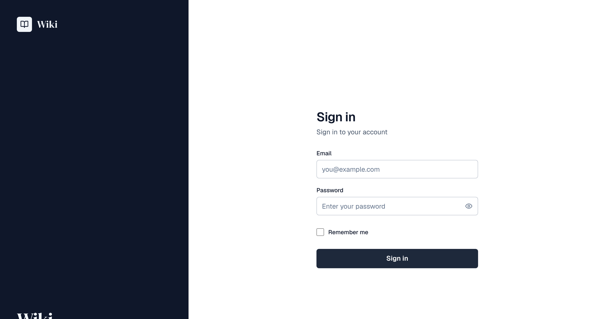

1. What the Wiki is
The Wiki holds your organization's pages: runbooks, handbooks, decisions, plans. Pages live in spaces, one per team or project, and each space decides who can read and who can write. Inside a space, pages form a tree: a page can have pages under it, as many levels deep as you need.
Several people can edit a page at the same time. Readers see the last published version; what editors change stays a draft until someone publishes it. See Drafts and publishing.
2. Sign in
Open the address your administrator gave you and sign in with your email and password, or with your organization's single sign-on button when one is set up. Forgot password? sends you a link to choose a new one.

If your administrator turned on anonymous access, people without an account can read public spaces without signing in. They see the reading view only: no editing, watching, copying or answering "Was this page helpful?". See Anonymous access.
3. Your first ten minutes
- Find your spaces. After signing in you land on Spaces: every space you can see. Yours lists only the spaces where you have a role. See Spaces.
- Read a page. Open a space, then a page in its tree on the left. The page shows its last published version, who changed it and when.
- Watch what matters. Watch on a page sends you an alert each time a new version is published. See Profile and notifications.
- Write a page. If you are an editor of the space, New page in the page tree creates a draft. Write it, then Publish. See Pages and the page tree and The editor.
- Find anything later. Press Ctrl+K (⌘K on a Mac) or / to search spaces, pages, labels and questions. See Search.
4. What you can do depends on your role
Each space gives its members one of four roles. Your role in a space shows at the top of the space (Your role: Editor) and in the Your role column of the space list.
| Role | Can |
|---|---|
| Viewer | Read pages |
| Commenter | Read pages and comment on them |
| Editor | Read, create, edit, move and delete pages |
| Admin | Everything, including members, settings and deleting the space |
Spaces that are internal or public can be read by more people than their members; only members can edit them. Creating a new space is for super admins by default.
5. Where to go next
- Home and navigation: the sidebar, the header and the Create button.
- The editor and Blocks and macros: writing and formatting pages.
- Comments, Reviews and Editing together: working on a page with others.
- Q&A, Calendar and Analytics.